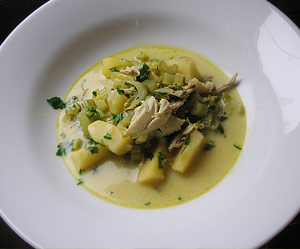

Indisch angehauchter Pouleteintopf
4,5 von 6Eine Stange Lauch, einige Karotten, Sellerie sowie einige gespickte Zwiebeln und 2 Knoblauchzehen in eine grosse Pfanne geben mit Wasser auffüllen und aufkochen. Ein Poulet ca. 45 Minuten mitkochen. Die Flüssigkeit beiseite stellen und das Poulet in mundgerechte Stücke schneiden. In einer Pfanne eine Zwiebel, Stangensellerie, ein Apfel (Schnitze) und 2 El Curry in etwas Butter andämpfen. Etwas Mehl beigben und mit dem Fond (ca. 1 Liter) ablöschen, 20 Minuten einkochen. 1/2 Dl Rahm, Salz, Pfeffer und Peterli beigeben.
